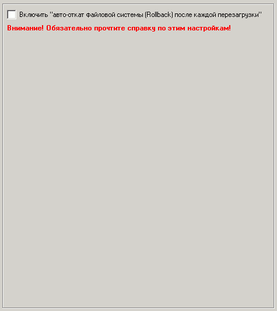

| Rollback (Откат): Вкл/Откл |

Наиболее важные опции на этой вкладке:
Включить "авто-откат файловой системы (Rollback) после каждой перезагрузки"
В RunpadPro предусмотрен модуль отката системы Rollback, использование которого позволяет автоматически восстанавливать логические диски после перезагрузки независимо от того, какие изменения на этих дисках происходили.
Является аналогом известных систем ShadowUser, Norton GoBack, DeepFreeze и пр.
Идеально подходит для защиты от вирусов и нежелательных изменений в системе: удаления файлов пользователями, изменения настроек ОС и пр.
Например, пользователь удалил важные системные файлы, или что-то изменил в настройках системы, запустил вирусы и отформатировал какой-то диск. Если был включен откат, то после перезагрузки клиентской машины все автоматически восстановится в то состояние, которое было до включения отката!
Причем, восстановление совершенно не занимает времени!
Однако, иногда бывает нужно сохранять изменения на дисках (например, когда нужно установить или обновить ПО) и временно отключать откат. Такая возможность есть и доступна в программе оператора.
Также через программу оператора всегда можно просматривать текущее состояние отката на выбранных машинах.
Следует заметить, что для активации отката необходима активация драйвера, причем каждое это действие требует перезагрузки. А если еще учесть, что при включенной клиентской части новые настройки применятся только после ее перезагрузки, то в таком случае на полную активацию отката первоначально понадобятся 3 перезагрузки клиентской машины. Однако, это нужно выполнить лишь один раз при первой настройке.
Текущее состояние драйвера и отката всегда можно посмотреть через программу оператора.
Важно! Для того чтобы драйвер и откат могли быть активированы необходима лицензия RunpadPro с модулем Rollback.
В противном случае откат не будет активирован ни при каких условиях.
Внимание! Возможен конфликт при использовании с антивирусом DrWeb 5x!
При включенной самозащите в DrWeb 5x компьютер не загружается.
Решение:
- если компьютер не загружается, нужно загрузиться в безопасном режиме (SafeMode) и деактивировать драйвер отката путем изменения настроек на этой странице или через программу оператора;
- для совместной работы модуля Rollback и DrWeb 5x нужно отключить функцию самозащиты в DrWeb;
- использовать DrWeb более поздней версии 6x и выше.